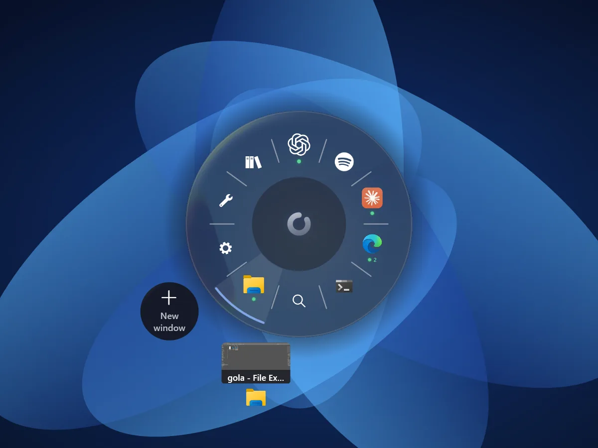
It switches. It doesn't relaunch.
The taskbar often opens a fresh empty window while your work sits behind it. Gola shows what's already open, with a green dot on anything running, and takes you straight back to it.
Windows 10 & 11
Hold CtrlAlt or a mouse button and a wheel opens under your cursor. Point at an app, its open windows fan out, and release on the one you meant.
Signed by Microsoft · no account · no telemetry
Ctrl+Alt, any chord you choose, or a mouse thumb button.
Flick toward an app and its open windows fan out as live previews.
Let go on the one you want. Let go outside and nothing happens.

The taskbar often opens a fresh empty window while your work sits behind it. Gola shows what's already open, with a green dot on anything running, and takes you straight back to it.
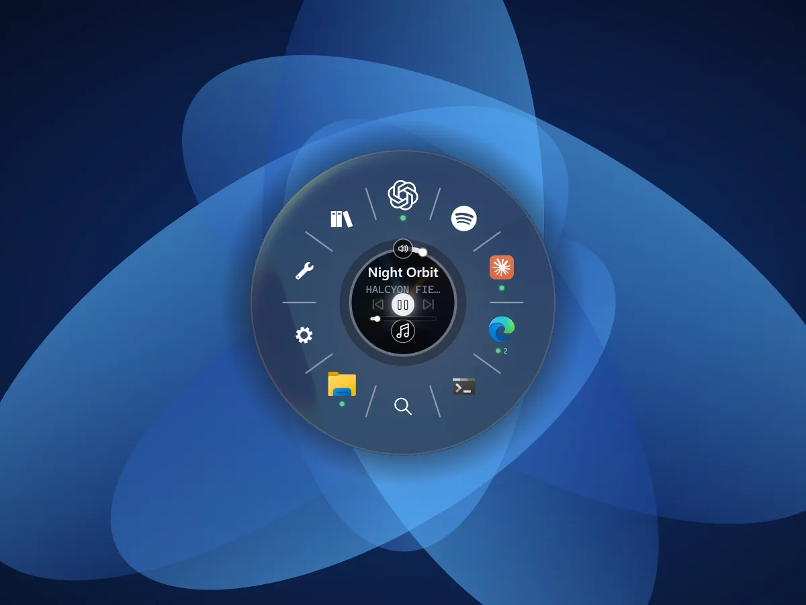
Whatever's playing in Spotify, a browser or a native player sits in the hub. Play, skip, scrub and drag the volume ring without switching apps.
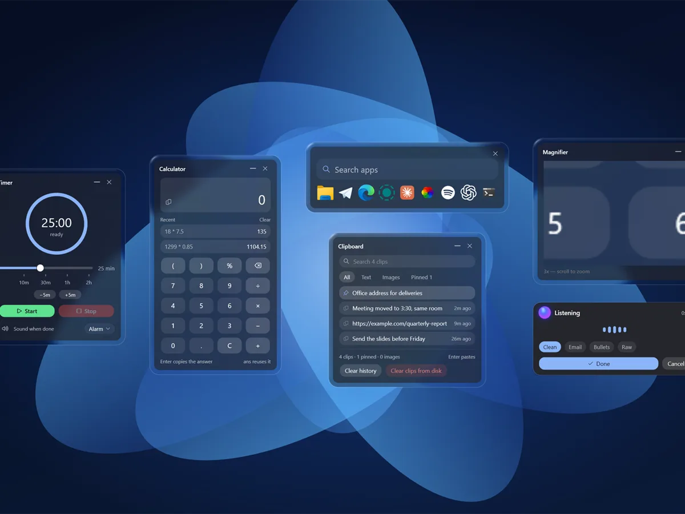
Timer, calculator, clipboard history, notes, screenshots, magnifier and app search. Dictation types into any app, and the speech recognition runs on your own PC.
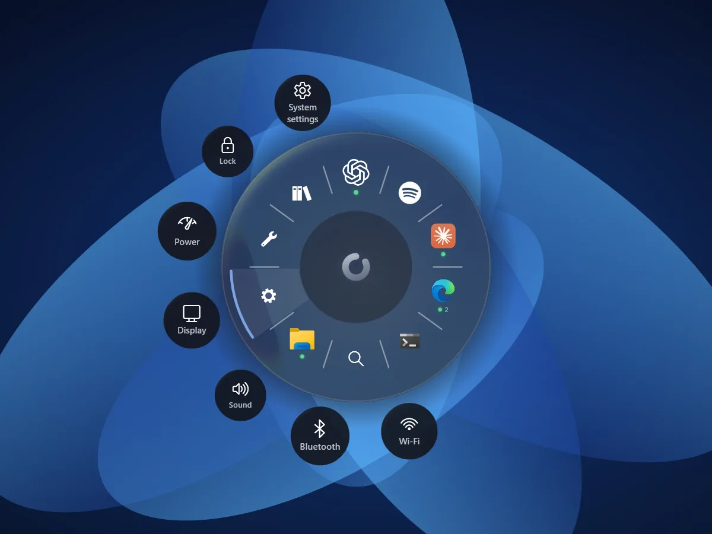
Wi-Fi, Bluetooth, sound, display, lock and power. Files from your phone land in the Shelf through a Telegram bot you own, with no cable and no Gola server.
Liquid is refractive glass. It bends the desktop behind the wheel and fringes the rim red and blue, the way a real lens does.
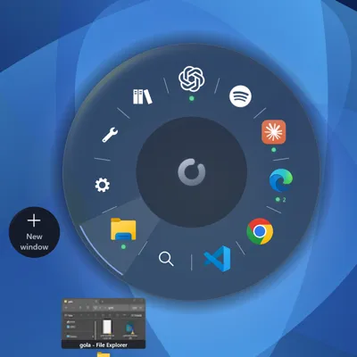
Liquid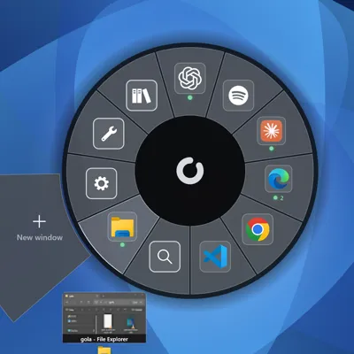
Graphite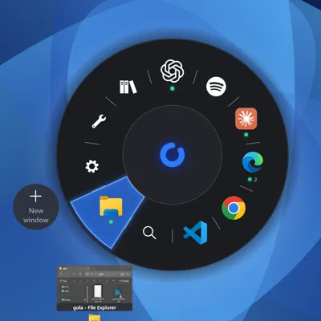
Halo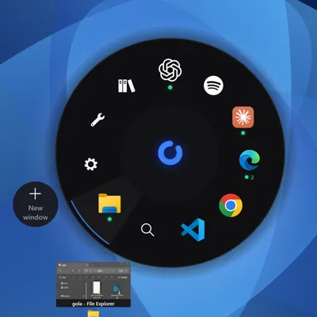
Orbs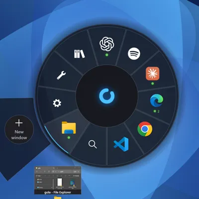
Fluent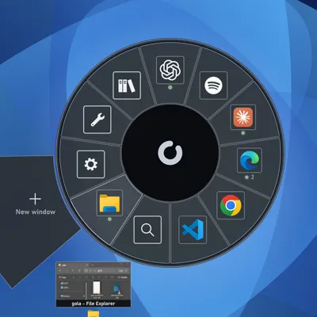
Filament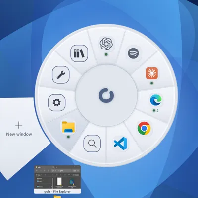
Porcelain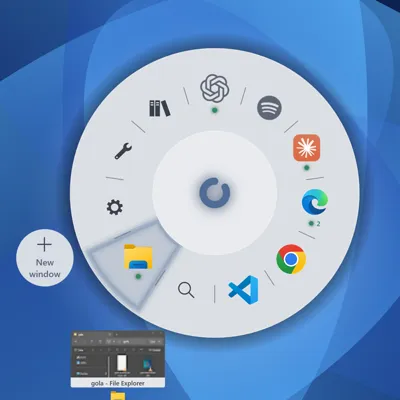
PebbleInstall it and hold the chord. There is nothing to sign up for.
Keystrokes are checked against your trigger and passed on. They are never recorded or sent.
Dictation, clipboard history and window previews never leave the machine.
Every permission is explained in the privacy policy.
A keyboard hook, screen capture for the previews and launching apps together look like what antivirus engines watch for. A hold-and-flick launcher needs all three. The Store build is signed by Microsoft.
Yes. In Settings, pick Back, Forward or Middle and hold it instead of a key chord. On a trackpad, map a three-finger tap to middle-click in Windows settings and choose Middle.
Keyboard layouts with an AltGr key report it as Ctrl+Alt. Change the chord in Settings, for example to CtrlShift.
Settings live in %APPDATA%\Gola\. Screenshots, notes and Shelf files live in %USERPROFILE%\Gola\. Nothing is uploaded.